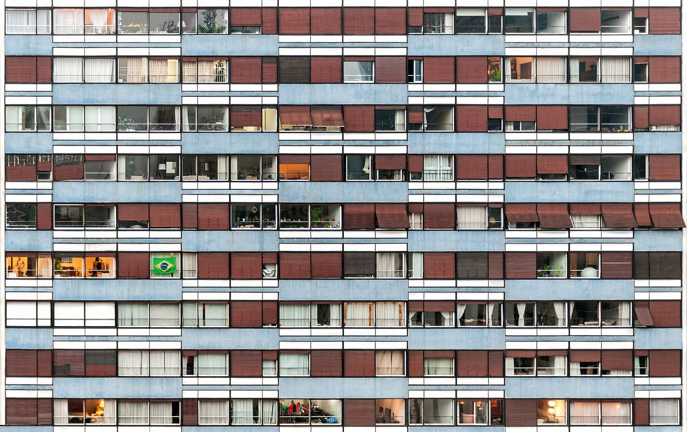
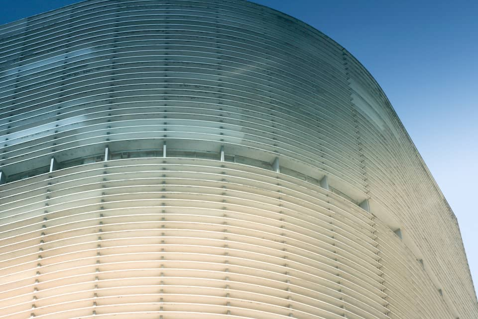
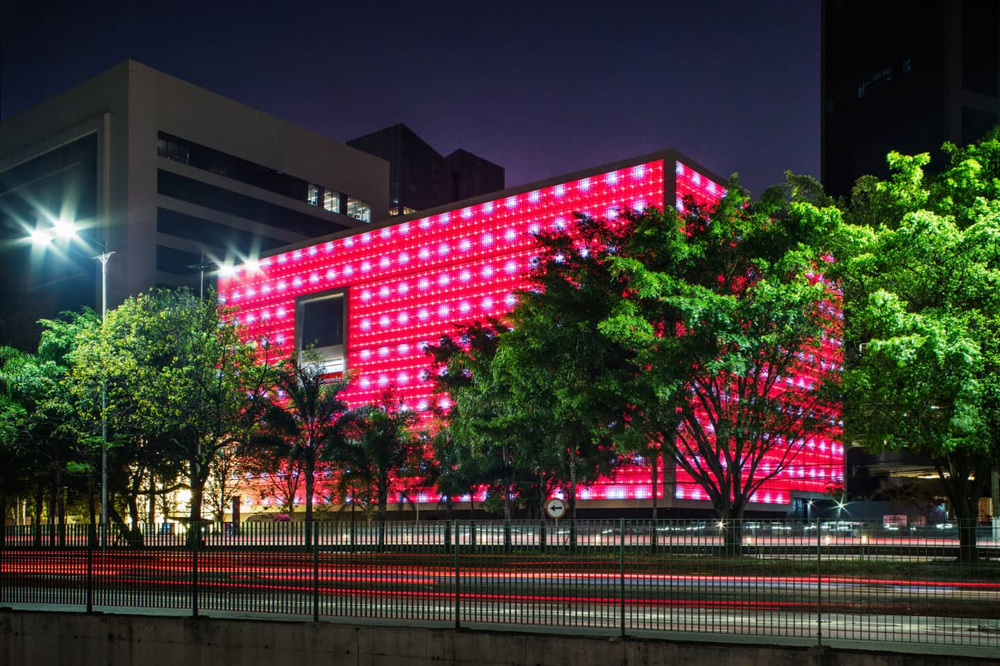

Programação por momento
Eventos e agenda para quem decide em cima da hora, do grátis ao mais caro.

O Simbó leva quem está decidindo o que fazer em São Paulo direto ao canal oficial da sua instituição ou plataforma: site, agenda ou bilheteria. Sem anúncio e sem comissão.

A pessoa filtra pelo momento e pelo bolso, vê a estação mais próxima e abre a página da casa.
Quando decide, um toque leva ao site, à bilheteria ou à agenda da instituição. A venda acontece no seu canal, não no nosso.
Eventos e agenda para quem decide em cima da hora, do grátis ao mais caro.
O filtro de preço vem primeiro: a pessoa só vê o que cabe no bolso e não descobre o valor tarde demais.

Cada página mostra a estação mais próxima e quantos minutos a pé até a porta.

Site, bilheteria ou agenda da instituição, a um toque do resultado.

Sem custo, sem comissão e sem compromisso: a gente prova o valor antes de qualquer conversa comercial.
Blue Note São Paulo, Theatro Municipal, Teatro Santander, Estação Pinacoteca, Bar Brahma e Esther Rooftop.
Páginas montadas pela nossa curadoria com dados públicos, prontas para as instituições assumirem.
Em qualquer um dos dois, a próxima etapa é uma conversa de 15 minutos com o fundador, sem custo e sem compromisso.